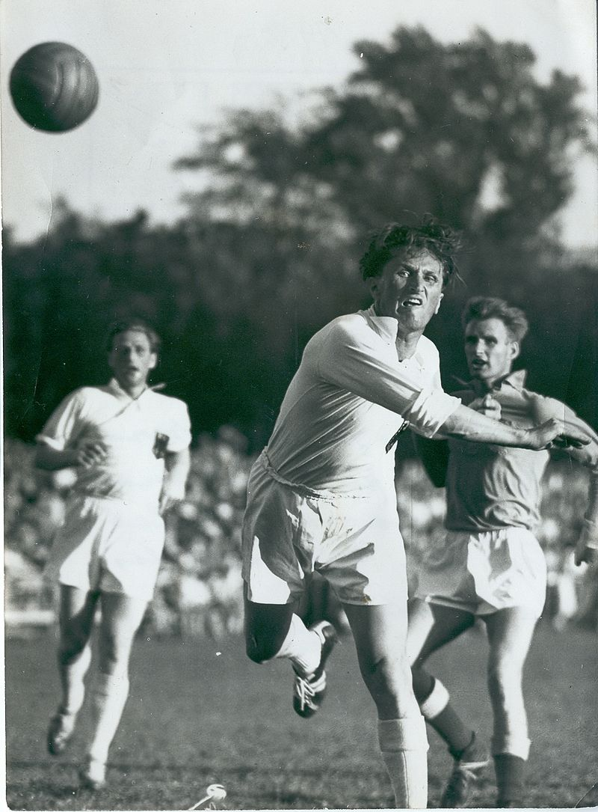

Le jeu moderne apparu au XIXe siècle, au Danemark. Dans les années 1900, un Irlandais appelé Casey invente un jeu semblable au handball aux États-Unis. En Tchécoslovaquie, après la fin de la première guerre mondiale prenait naissance le hazena un jeu très similaire au handball. Cependant, le handball est considéré comme un sport de conception danoise. Le Danois Holger Nielsen va instaurer les premières règles du handball moderne en 1898. En 1919, le professeur allemand Carl Schelenz, de l'École germanique d'éducation physique de Leipzig, propose un jeu appelé le torball : il créa alors le handball à onze. En général, Schelenz est considéré comme le père du handball.
Ceci est une image de Bernhard Kempa lors du Championnat du monde à onze en 1952.
Dans les années 1960, le handball à onze est progressivement abandonné au profit du handball à sept joueurs et le dernier championnat du monde à 11 a lieu en 1966.